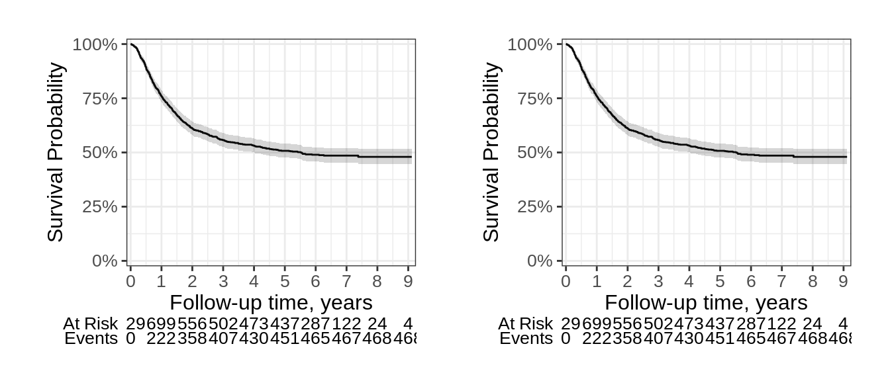

library(ggsurvfit)Loading required package: ggplot2library(patchwork)
p <-
survfit2(Surv(time, status) ~ 1, df_colon) |>
ggsurvfit() +
add_confidence_interval() +
add_risktable() +
scale_ggsurvfit()Overview of package functionality
Discussion for ggplot2-extenders
Side-by-side plots with {patchwork}
Structure of {ggsurvfit} functions
library(ggsurvfit)Loading required package: ggplot2library(patchwork)
p <-
survfit2(Surv(time, status) ~ 1, df_colon) |>
ggsurvfit() +
add_confidence_interval() +
add_risktable() +
scale_ggsurvfit()# build plot (which constructs the risktable)
built_p <- ggsurvfit_build(p)
# wrap built plot to place side-by-side
p2 <-
wrap_elements(built_p) |
wrap_elements(built_p)
The risk tables are not built until print or running ggsurvfit_build()
Then you have to wrap the
How can we make this easier for ggsurvfit users?
IDEA 1
In patchwork, the first line the arithmetic operator is a conditional to assess if the object needs processing
We could make this operation an exported generic function!
Issue submitted in Nov 2022, but no response yet. https://github.com/thomasp85/patchwork/issues/310
Current patchwork
Proposed patchwork
if (should_autowrap(e2)) e2 <- wrap_elements(full = e2)
should_autowrap <- function(x) {
is.grob(x) || inherits(x, 'formula') || is.raster(x) || inherits(x, 'nativeRaster')
}#' @export
#' @rdname arithmetic_prep
arithmetic_prep <- function(x, ...) {
UseMethod("arithmetic_prep")
}
#' @export
#' @rdname arithmetic_prep
arithmetic_prep.default <- function(x, ...) {
# wrap input plot as needed
if (is.grob(x) || inherits(x, 'formula') || is.raster(x) || inherits(x, 'nativeRaster')) {
x <- wrap_elements(full = x)
}
x
}Any tips on getting this through??
IDEA 2: S4 😬😬😬
I reached out on Stack Overflow, but couldn’t get the S4 solution to work
Also, I don’t know anything about S4 🤷
https://stackoverflow.com/questions/74072102
The package’s functions work! Nice!
I think I may have implemented it in a strange way.
Is there better way? 🤔🤔
add_censor_mark <- function(...) {
add_censor_mark_empty_list <- list()
structure(add_censor_mark_empty_list,
dots = utils::modifyList(x = list(na.rm = TRUE, size = 2, shape = 3),
val = rlang::dots_list(...)),
class = "add_censor_mark")
}
ggplot_add.add_censor_mark <- function (object, plot, object_name) {
update_add_censor_mark(plot, object)
}
update_add_censor_mark <- function(p, add_censor_mark_empty_list) {
# getting user-passed arguments
dots <- attr(add_censor_mark_empty_list, "dots")
# add censor marks with `geom_point()`
p +
rlang::inject(
ggplot2::geom_point(
data = ~ tidyr::uncount(.x, weights = .data$n.censor),
ggplot2::aes(!!!.construct_censor_mark_aes(p)),
!!!dots
)
)
}